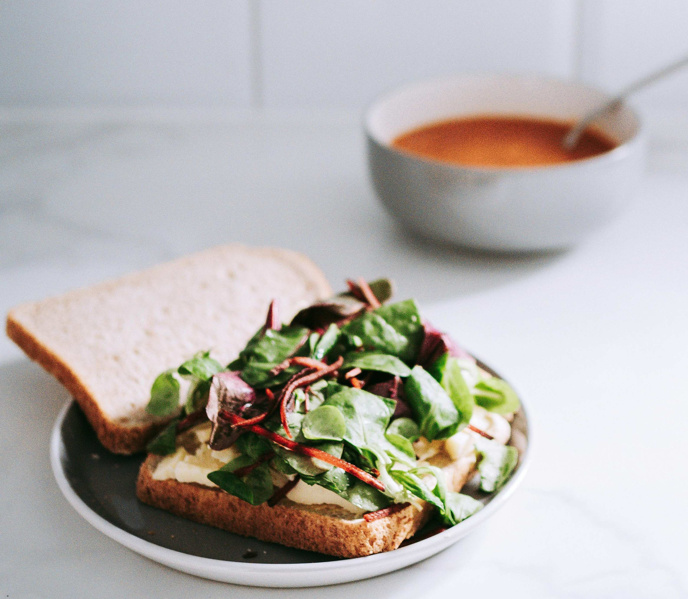

Sandwich

Description
Elevate your lunch with this vibrant, modern trio: a gourmet Prosciutto, Burrata, and Arugula Sandwich, paired with a velvety Super-Green Spinach Soup, and a side of citrus-dressed microgreens. It is a visually stunning, café-style meal that balances rich, creamy, and peppery notes.
Super-Green spinach soup:
Ingredients:
- 2 tbsp extra virgin olive oil
- 1 medium yellow onion, diced
- 2 cloves garlic, chopped
- 2 cups broccoli florets and stems, chopped
- 4 cups about (5 oz) fresh baby spinach
- 1 cup frozen peas (for natural sweetness and thickness)
- 4 cups low-sodium vegetable or chicken broth
- Salt and freshly cracked black pepper, to taste
Steps:
- Heat the olive oil in a pot over medium heat. Sauté the diced onion until translucent ( 5 minutes), then add the garlic and cook for 2 more minutes.
- Add the chopped broccoli, broth, and a pinch of salt. Bring to a boil, then reduce heat and simmer for 8 minutes until the broccoli is tender.
- Stir in the baby spinach and frozen peas. Cook for 2 minutes until the spinach is just wilted.
- Remove from heat. Use an immersion blender (or work in batches in a standard blender) to purée the soup until silky and completely smooth. Season with salt, pepper, and a squeeze of fresh lemon juice if desired.
Prosciutto and Burrata sandwich:
Ingredients:
- 4 thick slices of artisanal sourdough bread
- 1 ball of fresh burrata cheese
- 4-6 slices of high-quality prosciutto
- 2 cups fresh baby arugula
- 1 tbsp high-quality extra virgin olive oil
- Flaky sea salt
Steps:
- Brush the outer sides of the sourdough slices with olive oil and toast them in a skillet over medium-high heat until golden and crispy.
- Tear the fresh burrata in half and spread it evenly across the two bottom toasted slices.
- Top the burrata with a layer of prosciutto and a generous handful of fresh baby arugula.
- Sprinkle lightly with flaky sea salt, place the top slice of bread on, slice in half, and serve warm.
Plating the greens:
- Garnish: Toss a small bowl of mixed microgreens or baby arugula with 1 tsp of olive oil and a few drops of lemon juice.
- Modern aesthetic: Serve the sandwich on a large ceramic plate next to a small, deep bowl of the vibrant green soup. Top the soup with a small drizzle of olive oil and a crack of black pepper. Place a small, elegant mound of the dressed greens directly beside the sandwich.
Home